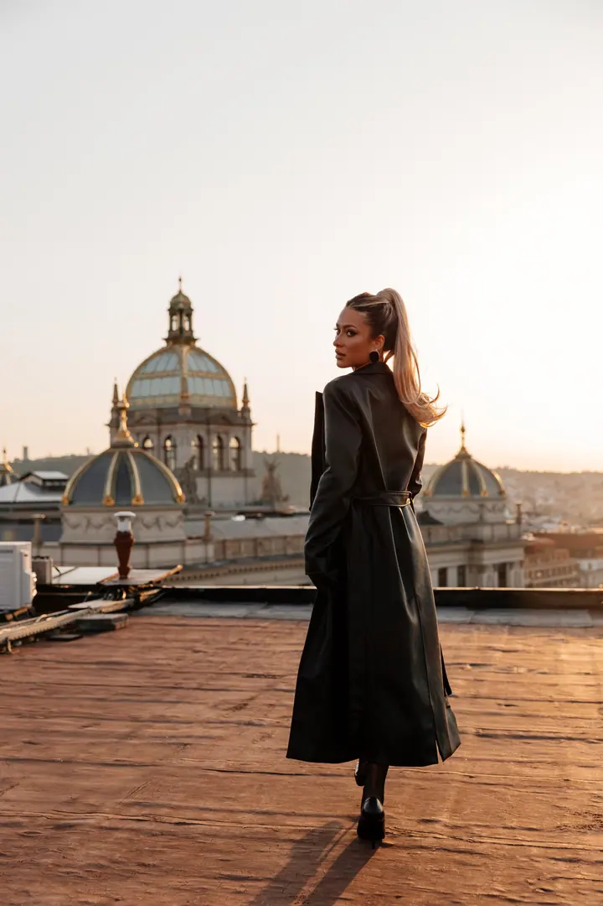
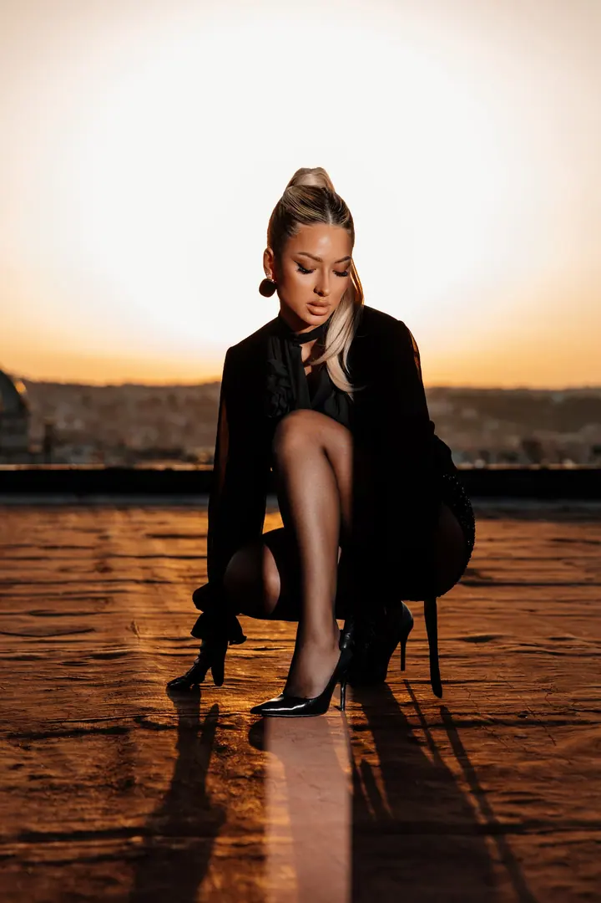
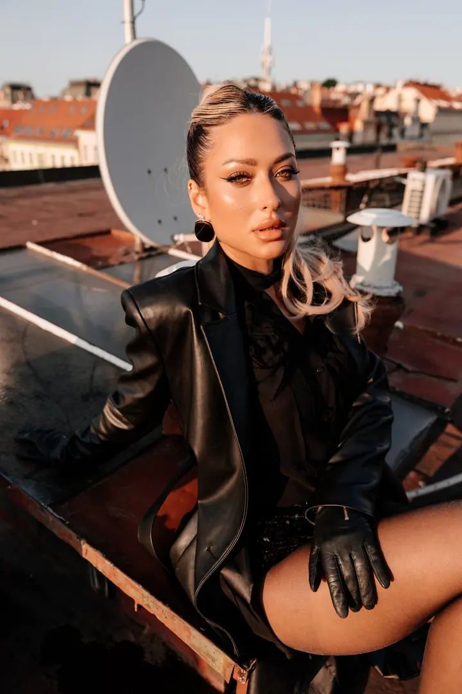

jedna
Lifestyle portréty
Portréty venku, v ateliéru nebo u vás doma, nejraději za přirozeného světla. Pomohu vám s pózami, abyste se cítili dobře a na fotkách vypadali sami sebou.

Svatební a portrétní fotografka · Praha, celá Česká republika, zahraničí

Jmenuji se Anna Olsen a jsem svatební a portrétní fotografka z Prahy. Fotím romanticky a přirozeně, nejraději za přirozeného světla, a stejně ráda vyrážím za páry po celé republice i do zahraničí.
Více o mně
Co fotím
jedna
Portréty venku, v ateliéru nebo u vás doma, nejraději za přirozeného světla. Pomohu vám s pózami, abyste se cítili dobře a na fotkách vypadali sami sebou.
Fotím svatby romanticky a přirozeně, v Praze, po celé republice i v zahraničí. Pracuji nenápadně, abyste si den mohli prožít a zároveň si ho pak celý připomenout.
Procházka Prahou ve dvou, třeba na střeše při západu slunce nebo v rozkvetlé Divoké Šárce. Dostanete čas zpomalit a užít si jeden druhého.
Něžné rodinné chvíle venku i v klidu domova. Od prvních úsměvů po první krůčky.

Praha ze střech, ve zlaté hodině.


Za objektivem
Poprvé jsem fotoaparát vzala do ruky v deseti letech na výletě s tátou. Fotografie se pro mě ale stala řemeslem až v roce 2011. Jsem fotografka, cestovatelka a dobrodruh, a kamkoli se podívám, vidím obrazy a příběhy, které v sobě nesou.
Moje fotky nejsou o mně, ale o vás a vašem příběhu. Přirozené světlo je moje vášeň a naučila jsem se, z jakých úhlů fotit a jaké pózy vám budou slušet. Věřím, že dobrou fotografii tvoří emoce, a proto mi záleží na tom, abyste se při focení cítili uvolněně.
Práce pro mě začíná dlouho před focením. Ráda se s vámi předem seznámím, a když fotky dokončuji, procházím každou zvlášť. Fotím v Praze, po celé ČR i v zahraničí, v minulosti třeba v Itálii, Rakousku nebo Francii.
Anna
Dejte mi vědět, co si představujete, a já vám připravím nabídku na míru.
Před focením si spolu promluvíme, abych vás poznala a věděla, co je pro vás důležité.
Fotíme venku, v ateliéru nebo u vás doma. S pózami vám poradím, vy se jen uvolněte a buďte sami sebou.
Každou fotku pečlivě projdu a upravím. Hotové snímky vám pošlu přes online galerii.
Portfolio
Otázky
Nejčastěji v Praze, třeba v Divoké Šárce, na Grébovce nebo na střechách nad městem. Ráda ale přijedu kamkoli po republice i do zahraničí.
Určitě. Mám vyzkoušené pózy a postupy, díky kterým se budete cítit dobře a dobře i vypadat. Většina lidí se po pár minutách uvolní.
Tuhle otázku dostávám nejčastěji a ráda vám s výběrem poradím. V balíčku Premium vám s oblečením pomůže profesionální stylistka a je v něm i líčení a účes.
U krátkého focení Express máte upravené fotky do 4–5 dnů. U ostatních focení a svateb se na termínu domluvíme předem.

Napište pár vět o tom, co si představujete. · +420 773 312 388